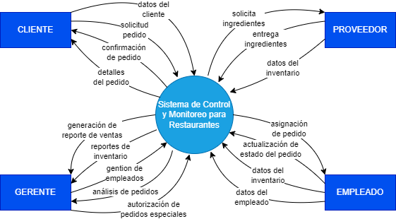
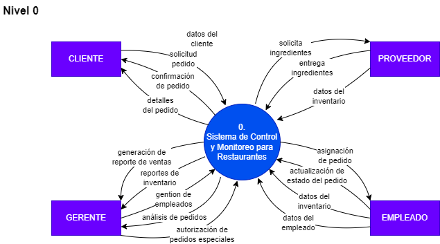
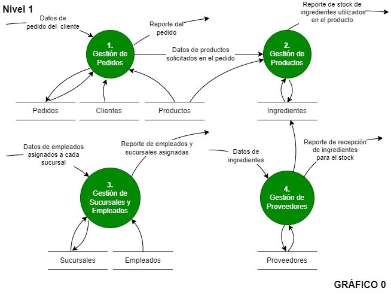
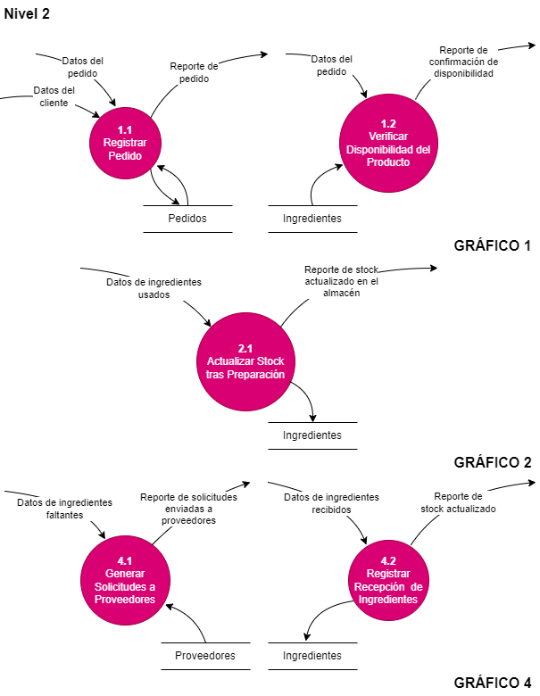
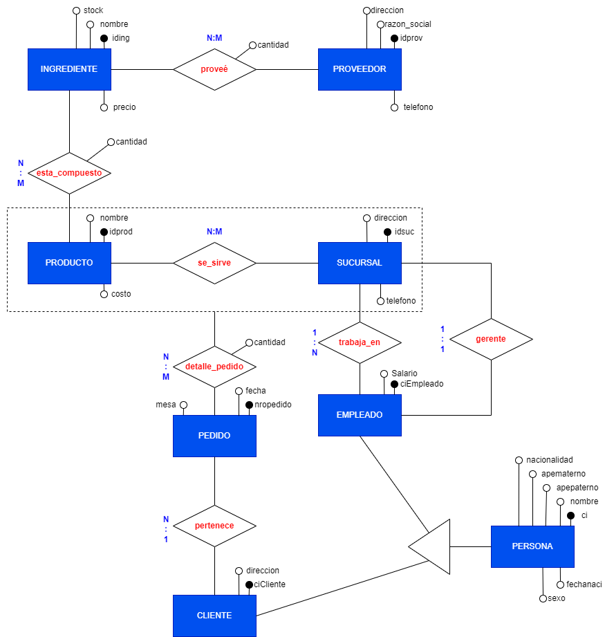

Sistema de Control y Monitoreo para Restaurantes Grupo 22
¡Bienvenidos a nuestro restaurante! Un lugar para todos los gustos
Análisis Estructurado
Descripción del análisis estructurado...
Modelo Ambiental
a). Declaración de Propósitos
El propósito del Sistema de Control y Monitoreo para restaurantes es automatizar y optimizar la gestión de ventas, control de inventarios, procesamiento de pedidos y supervisión de empleados en una sucursal de venta.
El sistema busca mejorar la eficiencia en el manejo de pedidos, la actualización en tiempo real de inventarios, la interacción con proveedores para la entrega de ingredientes, y la generación de reportes de ventas e inventarios, garantizando una operación fluida y satisfactoria tanto para los clientes como para los empleados y gerentes.
b). Diagrama de Contexto
A continuación, se presenta el diagrama de contexto:

Figura 1: Diagrama de Contexto del Sistema de Control y Monitoreo de Restaurantes
c). Lista de Acontecimientos
Cliente realiza un pedido.
Cliente cancela un pedido.
Empleado actualiza el estado del pedido.
Gerente solicita reporte de ventas.
Gerente solicita reporte de inventarios.
Cliente solicita información sobre su pedido.
Proveedor notifica cambios en el stock de ingredientes.
Diagrama de Flujo de Datos por Niveles
Diagrama de Flujo de Datos Nivel 0
El Diagrama de Flujo de Datos (DFD) Nivel 0 representa de manera general cómo el sistema gestiona el flujo de información entre sus principales procesos, actores externos y almacenes de datos. Este nivel muestra las entradas y salidas del sistema sin detallar los procesos internos, proporcionando una visión global del funcionamiento del sistema. En este caso, se modela un sistema de gestión de pedidos en un restaurante, donde los clientes, empleados, proveedores y sucursales interactúan con los procesos clave, como la recepción de pedidos, la gestión de productos e inventarios, y la generación de reportes. Este diagrama es una herramienta esencial para comprender el alcance del sistema y sus principales interacciones.

Figura 1: DDF NIvel 0
Diagrama de Flujo de Datos Nivel 1
El Diagrama de Flujo de Datos (DFD) Nivel 1 desglosa los procesos principales identificados en el Nivel 0, mostrando con mayor detalle cómo interactúan entre sí y con los almacenes de datos del sistema. Este nivel refleja el funcionamiento interno de cada proceso clave, como la gestión de pedidos, el control de inventarios, la administración de empleados y la relación con proveedores. En este diagrama se evidencia cómo se manejan las entradas y salidas de información dentro del sistema, permitiendo un análisis más profundo de sus componentes y asegurando que los flujos de información se realicen de manera eficiente y coherente.

Figura 2: DFD Nivel 1
Diagrama de Flujo de Datos Nivel 2
El Diagrama de Flujo de Datos (DFD) Nivel 2 proporciona un desglose aún más detallado de los procesos específicos identificados en el Nivel 1, mostrando cómo cada subproceso interactúa con los actores externos, los almacenes de datos y otros subprocesos dentro del sistema. En este nivel, se modela de forma precisa cómo se manejan tareas particulares, como la validación de pedidos, el cálculo de costos, la actualización de inventarios y la generación de reportes. Este nivel es especialmente útil para comprender las operaciones internas del sistema y asegurarse de que todos los flujos de información y datos estén correctamente diseñados y alineados con los objetivos del negocio.

Figura 3: DFD Nivel 2
Diagrama Entidad Relación
El Modelo Entidad-Relación (MER) que se presenta a continuación describe un sistema de gestión de pedidos, productos, proveedores y empleados, estructurado para un restaurante. Este modelo está diseñado para representar de manera visual y lógica las entidades clave dentro del sistema y sus interacciones. En el diagrama, las principales entidades son Ingredientes, Proveedores, Productos, Sucursales, Pedidos, Empleados y Clientes, cada una con sus atributos específicos, tales como identificadores, nombres, direcciones y otros datos relevantes.
Las relaciones entre estas entidades están cuidadosamente definidas para reflejar los procesos de negocio del sistema. Por ejemplo, los Productos están compuestos por varios Ingredientes, los Proveedores suministran estos Ingredientes, y los Productos se sirven en diferentes Sucursales. Los Pedidos se asocian tanto con los Clientes que los realizan como con los Productos que los conforman. Además, los Empleados trabajan en Sucursales específicas, y cada sucursal tiene un Gerente que supervisa su funcionamiento.
Este modelo utiliza una notación estándar para representar las entidades, relaciones y atributos, lo que facilita la comprensión de los procesos que manejan tanto los datos como las interacciones dentro del sistema. Las cardinalidades entre las entidades están claramente indicadas, como las relaciones de uno a muchos (1:N) y muchos a muchos (N:M), lo que ayuda a visualizar cómo los datos se organizan y se interconectan.

Figura 1: Diagrama Entidad Relacion
Análisis Orientado a Objetos
El análisis orientado a objetos se centra en identificar los objetos y clases principales que forman parte del sistema, sus atributos, métodos y relaciones.
Este enfoque permite modelar el sistema de forma más natural, aprovechando conceptos como la encapsulación, la herencia y el polimorfismo.
A continuación, se presenta el diagrama de clases que representa las principales entidades del sistema y sus interacciones.